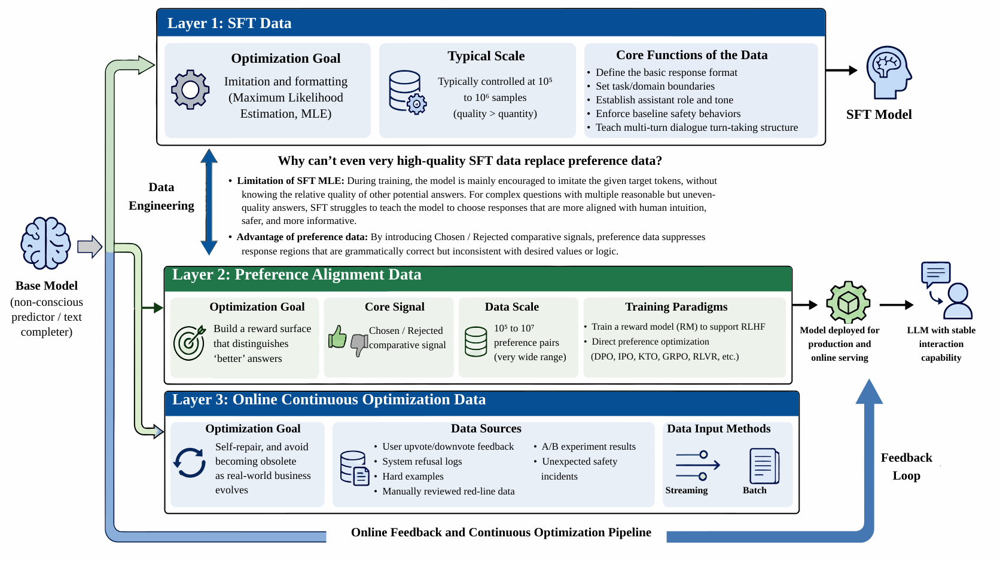
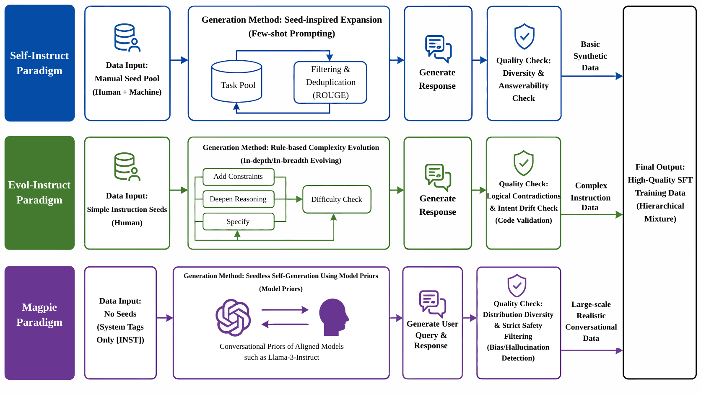
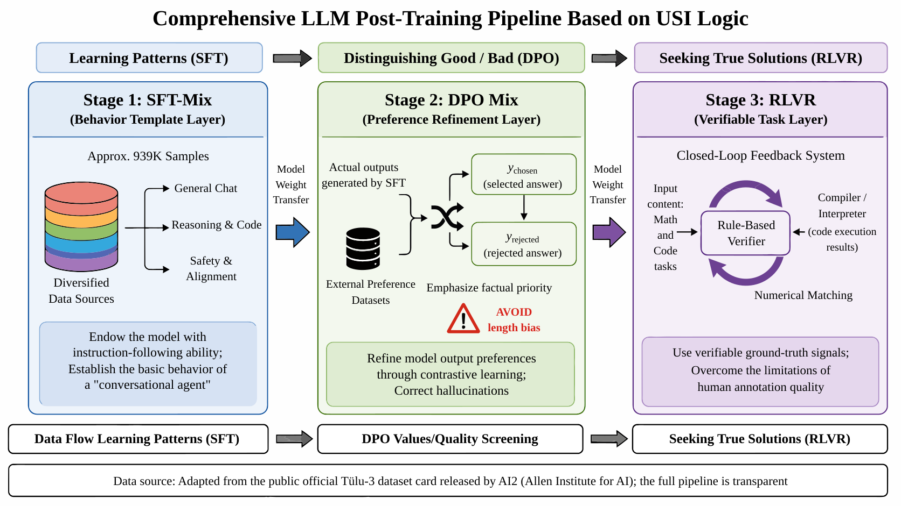

第45章：LLM 后训练配方：SFT 与偏好¶
摘要¶
监督微调（Supervised Fine-Tuning，SFT）与偏好对齐（Preference Alignment）是大语言模型（Large Language Model，LLM）后训练阶段的两个核心数据工程入口，但二者承担的目标截然不同：前者通过极大似然估计（Maximum Likelihood Estimation，MLE）为模型建立行为模板，后者通过 chosen/rejected 对比信号塑造模型的奖励曲面。本章以"配方"视角拆解开源模型的后训练数据工程实践。内容首先提出 SFT、偏好对齐与在线持续优化的三段论流水线，界定各层的数据形状、优化目标与 manifest 治理要求；继而以 Tülu-3、Llama-3、Qwen2.5 与 Nemotron-4/HelpSteer2 为代表横向对照后训练数据的透明度与规模，并区分直接披露、合理推断与教学估算三类信息可信度；随后比较 Self-Instruct、Evol-Instruct 与 Magpie 三类指令合成流派在种子依赖、难度校准与分布过滤上的工程差异，并延伸至拒绝采样（Rejection Sampling，RS）、奖励建模（reward modeling，RM）与直接偏好优化等范式的数据生产方法。本章强调后训练数据工程的成熟度不在于产出样本，而在于每条样本能否追溯来源、隔离评测、说明用途并支持回滚。
关键词¶
LLM；数据配方；开源大模型；训练数据；阶段化调度
学习目标¶
- 能够区分 SFT 与偏好对齐的优化目标，解释 MLE 行为模板与 chosen/rejected 奖励曲面塑造的差异。
- 能够设计 SFT、偏好对齐与在线持续优化的三段论流水线，并界定各层的数据形状与 manifest 治理要求。
- 能够对比 Self-Instruct、Evol-Instruct 与 Magpie 三类指令合成流派在种子依赖、难度校准与分布过滤上的工程差异。
- 能够设计拒绝采样、奖励模型与 DPO、GRPO、RLVR 等范式的偏好数据生产方法。
- 能够评估后训练数据的来源可追溯、评测隔离、用途说明与回滚能力，识别 Reward Hacking 与数据污染风险。
开篇问题场景：为什么 Alpaca 训不出 GPT-4 风格¶
2023 年至 2024 年初，开源社区集中探索了指令微调（Instruction Tuning）路线。设想这样一个常见团队案例：某大模型应用团队为了打造自己的垂直领域助手，使用开源基座模型，并收集了约 200K 条 Alpaca、Dolly 以及 Self-Instruct 风格的指令数据，对其进行监督微调（Supervised Fine-Tuning, SFT）。
训练结束后，表面指标较为正常：Loss 稳步下降，模型也确实从“文本续写器”变成了一个愿意回答问题的“助手”。然而，在内部红蓝对抗和真实业务灰度测试中，团队仍然发现几个关键缺口：
- 复杂指令遵循能力不足： 当 prompt 包含三个以上的约束条件，例如“用 json 格式输出”“字数不超过 100 字”“包含三个段落”，模型大概率会遗漏条件。
- 缺乏拒答边界： 面对具有误导性、有害性或明显超出其知识库的问题，例如“如何制造危险品”或虚假的医学诊断，模型可能给出不可靠回答，而不是稳定地识别风险并拒绝。
- 长回答结构散漫： 难以生成层次分明、逻辑递进的长文，多轮一致性也不稳定。
- 工具使用意识薄弱： 面对需要外部 API 支撑的问题，模型更倾向于直接编造答案，而不是输出标准的工具调用 JSON。
无论该团队如何清洗这 200K 数据，最终的模型在体验上依然显著弱于 Llama-3.3-Instruct 或 Qwen2.5-Instruct。
这个例子说明，后训练不能只理解为增加更多指令样本；它更像是一套分阶段的数据组织与行为校准过程。
- SFT 仅仅负责建立行为模板，它能教会模型“用什么格式说话”，但不能单独完成偏好排序，即无法教会模型“什么样的话是更好的”。
- 偏好对齐（Preference Alignment）不是 SFT 之后的简单补充，而是一层独立的数据生产与评审机制。
- 工业级的在线持续优化需要把用户反馈、拒绝采样（Rejection Sampling, RS）、奖励模型（Reward Model, RM）和污染检测全部纳入同一条数据链中。
- 开源模型的参考价值，不只来自权重开放，也来自技术报告、数据集卡片和训练流程中披露的后训练 recipe 信息。
45.1 后训练数据的三段论：SFT、偏好对齐与在线持续优化¶
为了让基座模型具备稳定的交互能力，后训练数据工程通常需要构建一条分层流水线。这几层不仅在数据形状上不同，在优化目标和工程难点上也各有侧重。
第一层：SFT 数据 SFT 的核心任务是“格式化”。它负责把基座模型从一个无意识的“概率预测机/续写器”变成一个懂规矩的“助手”。SFT 数据规定了回答的基础格式、任务的领域边界、助手的角色语气、基本的安全行为底线以及多轮对话的交替结构。 在现代工程实践中，SFT 数据的常见规模通常控制在 \(10^5\) 到 \(10^6\) 级别样本。在这个阶段，数据质量（多样性、准确性、格式严谨性）远比数量重要。百万级别的低质量 SFT 数据往往不如十万级别的精编数据。
第二层：偏好对齐数据 如果说 SFT 是教模型“应该怎么答”，那么偏好对齐层就是教模型“两个合格的回答中，哪一个更好”。这一层建立了模型的奖励曲面（Reward Surface）。 偏好数据可以服务于多种不同的训练范式：用于训练 RM 以支持 RLHF，或者直接用于 DPO、IPO、KTO、GRPO 或 RLVR 等直接偏好优化方法。其常见规模跨度极大，从 \(10^5\) 到 \(10^7\) 个偏好对不等，这取决于数据构建过程中是否包含大量自动生成、多轮采样以及在线反馈。
在这些方法中，偏好学习并不只有“二选一排序”这一种理解方式。KTO 等方法把人类反馈解释为更接近前景理论的收益/损失信号，理论分析也在尝试统一 RLHF、DPO 与更一般的人类偏好学习范式（Ethayarajh et al. 2024; Gheshlaghi Azar et al. 2024）。这提醒数据工程侧不要只保存最终标签，还要保存反馈来源、评审理由和候选组结构。
第三层：在线持续优化数据 模型发布上线并不是后训练的终点，而是起点。第三层决定了模型能否随着真实业务演进而自我修复。 上线后的点赞、点踩等用户反馈、系统拒答日志、困难样本、人工复核的红线数据、A/B 实验结果以及突发安全事件，都会通过流式或批处理的方式进入持续优化链路。缺乏这一层，模型将停留在一次性发布的静态水平，最终被不断变化的用户输入分布所淘汰。
为什么 SFT 数据质量再高，也不能替代偏好数据？ 这是因为 SFT 采用的是极大似然估计（Maximum Likelihood Estimation, MLE），模型在训练时主要被鼓励“模仿”给定的目标 token，而不知道其他潜在回答的优劣。对于一个复杂问题，存在多个合理但质量不一的答案，SFT 难以教会模型在生成时选择那个更符合人类直觉、更安全、更详实的答案。偏好数据通过引入 chosen / rejected 对比信号，能够压制那些语法正确但不符合价值观或逻辑的回答空间。因此，后训练数据工程需要同时管理 SFT 所塑造的行为形状，以及偏好与持续优化构成的反馈闭环。
图45-1展示了相应的流程或结构。

{kind=link}
从工程落地角度看，三段论还意味着三类完全不同的数据资产管理方式。SFT 数据更像“行为模板库”，它需要稳定、干净、覆盖常见任务，并且字段结构尽量简单。团队通常会围绕 messages、instruction、input、output、source、license、quality_score 等字段建立最小 schema。只要 schema 稳定，SFT 数据可以很容易进入不同训练框架，也便于跨版本比较。
偏好数据则更像“行为判别库”。它不能只保存最终 chosen/rejected 文本，还应该保存候选生成模型、采样温度、候选数量、标注人或评审模型、标注理由、冲突复核结果，以及是否涉及安全、事实性、代码、数学或工具调用等标签。缺少这些元信息时，后续很难解释一次 DPO 训练为什么变好或变差。很多团队第一次做偏好数据时，只保留了两个回答和一个 label，等模型出现偏好漂移时才发现没有足够信息定位问题。
在线持续优化数据更像“事件日志库”。它来自真实用户、红队、评测平台、客服反馈和线上监控，天然带有时间、场景、版本和权限属性。因此，它需要和模型版本、prompt 版本、系统策略、用户授权状态、脱敏状态、评测集隔离状态绑定。否则，看似有价值的真实反馈很可能因为隐私、污染或版本不可追溯而不能进入训练集。换言之，后训练数据工程的成熟度，不只体现在能否产出样本，更体现在每条样本能否说明“从哪里来、为什么可信、适合进入哪个阶段、出了问题如何回滚”。
一个较稳妥的后训练数据仓库，至少应当维护四类 manifest。第一类是数据来源 manifest，记录数据集名称、许可证、采集时间、过滤条件和责任人。第二类是样本处理 manifest，记录去重、过滤、改写、翻译、评分和人工复核过程。第三类是训练消费 manifest，记录某个数据版本被哪个模型、哪个训练阶段、哪个实验配置使用。第四类是评估隔离 manifest，记录哪些 benchmark、红队集、验收集禁止进入训练。这四类 manifest 看似繁琐，但它们决定了后训练 pipeline 能否从一次实验变成可运营系统。
45.2 开源后训练数据透明度横向对比¶
在构建自己的后训练管线前，我们需要横向比较当前主流开源模型的公开路线。本节选取 Tülu-3、Llama-3、Qwen2.5 与 Nemotron-4 作为四类代表路线进行剖析。我们的核心不是评价谁的榜单得分更高，而是建立“公开信息如何读”的工程方法论，评估其对实际业务的指导价值。
还需要补一句现实约束：开源后训练数据和 recipe 更新非常快，这类横向比较只能看作某一时点的快照。凡是要进入出版物或长期复盘的对比，最好同时标注报告发布日期、数据版本以及仓库 revision（commit/tag），否则同一张表在几个月后就可能明显过时。
在阅读表45-1时，请注意数据的标注规则：
- [D]：技术报告、论文或数据集卡片中直接披露的明确数字。
- [I]：根据公开的模型训练流程、切分比例或上下文合理推断得出的规模。
- [E]：为教学说明或工程估算做的推演，不能视为官方披露数字。
表 45-1：主流开源模型后训练数据透明度与规模
| 模型 / 项目 | 后训练阶段 | 数据开放程度 | SFT 数据规模 | 偏好 / 奖励数据规模 | 关键数据来源 | 可复现价值 |
|---|---|---|---|---|---|---|
| Tülu-3 | SFT / DPO / RLVR | 高 | 939K [D] | DPO mixture 规模待逐项核验 [D] | SFT-Mix、DPO mix、RLVR verifier | 全开源 recipe 对照系，适合复现与迁移 |
| Llama-3 | SFT / Reward Model / RLHF | 中 | 未完整开放；报告披露流程与局部统计 [D/I] | 多轮偏好标注与 RM/DPO 数据，具体总量需按表格核验 [D/I] | 人工标注、多轮 RM、拒绝采样 | 理解工业级多轮迭代与重度人工介入 |
| Qwen2.5 | SFT / 偏好 / 大规模合成数据 | 中 | 部分披露，具体总量需以报告为准 [D/I] | 部分披露，规模未知 [D/I] | 指令合成、多语、多任务；Magpie 作为无种子合成对照流派 | 观察中文、多语后训练及大规模合成数据 |
| Nemotron-4 | Reward Model / HelpSteer2 | 高 | 非本节重点 | HelpSteer2 约 10K prompts / pairs 级别，需按数据集卡核验 [D] | 属性化偏好标注、Daring-Anteater SFT 数据 | 奖励模型数据设计的重要样板 |
表45-1 中的 [D] 表示公开材料直接披露的信息，[I] 表示依据公开流程或上下文做出的合理推断。无法直接追溯的数字不应写成确定规模，而应保留为“未披露”或“需按来源核验”。
- Tülu-3 是本章最适合作为复现基线的项目之一。它不仅开源了模型权重，还公开了后训练数据混合、训练代码与评估方法，便于团队将论文中的 recipe 转化为可检查的工程流程。
- Llama-3 (Grattafiori et al. 2024) 代表了重资产工业路线。其报告披露了多轮后训练、偏好标注、奖励模型重训和拒绝采样等关键机制，但很多数据细节并未完整开放，因此更适合作为理解工业闭环的参照，而不是直接复刻的对象。
- Qwen2.5 / Qwen3 对中文、多语、多任务和合成数据路线有重要参考价值。这里需要谨慎区分：Qwen 系列报告中的合成数据路线与 Magpie (Xu et al. 2025) 这类无种子合成方法可以并列讨论；Qwen3 技术报告也可作为后续版本路线的公开参照（Yang et al. 2025），但不应在缺少明确来源时写成“官方采用 Magpie”。
- Nemotron-4 和 HelpSteer2 的价值在于偏好标注颗粒度。HelpSteer2 (Wang et al. 2024b) 不只记录总体偏好，还围绕有用性、正确性、连贯性、复杂度和冗余度等维度建立打分信号，为奖励模型数据设计提供了可参考样例。奖励模型的工程技巧还可参考 Skywork-Reward 对数据混合、训练稳定性和评测口径的总结（Liu et al. 2024b）。
45.3 SFT 数据合成三大流派：Self-Instruct、Evol-Instruct 与 Magpie¶
在明确了 SFT 位于后训练的第一层后，面临的直接问题是如何获取高质量指令。由于人工编写成本高昂且难以覆盖长尾任务，指令合成（Instruction Synthesis）成为主流。本节比较三种合成路线在真实后训练 recipe 中的工程差异。
这里需要先划清任务边界：Self-Instruct、Evol-Instruct、Magpie 的目标都是生成 SFT 样本，它们输出的是监督学习所需的指令/回答对，而不是偏好标签、奖励分数或 verifier 信号。偏好数据的构造属于下一层任务，不能和本节混为一谈。
45.3.1 Self-Instruct：从种子任务扩展指令空间¶
要点解析： Self-Instruct (Wang et al. 2023) 是指令合成的代表性方法之一。它依赖少量人工编写的种子任务（Seed Tasks）作为启动点，通常是数百个样例。流程中，强模型会参考这些种子，泛化生成新的 instruction、input 和 output，也就是指令、输入上下文和预期输出。 工程优势： 适合在项目初期快速扩展任务领域的覆盖面，解决基座模型“不知如何开启对话”的问题。 主要风险： 较强依赖 prompt 模板，生成的数据容易出现模板化、语言同质化，且任务难度分布往往集中在常见区间，难以覆盖复杂边缘场景。
45.3.2 Evol-Instruct：通过进化规则提升复杂度¶
要点解析： 为了解决 Self-Instruct 难度不足的问题，WizardLM (Xu et al. 2024) 提出了 Evol-Instruct 路线。该路线的核心是将简单的指令通过特定的“进化规则”强制变难。常见的进化操作包括：加约束条件、增加推理深度、引入多条件分支、要求多步骤解答等。 工程优势： 能够极为有效地生成高复杂度的 instruction-following 数据，逼迫模型学习深层次的逻辑服从，而不是简单的表面应答。 主要风险： 难度提升并不等同于质量提升。多次进化容易引发题意漂移（Intent Drift），即复杂的约束相互矛盾，或者生成的指令变成意义不清的文字堆叠。因此，难度校准和答案验证是该流派的质检重点。
45.3.3 Magpie：无种子自吐指令与响应¶
要点解析：
另一类值得关注的路线是 Magpie。它弱化了人工种子依赖，直接利用已经过对齐的 Instruct 模型自身的对话先验来生成用户侧指令，例如 Llama-3-Instruct。通过输入很短的 pre-query 提示，甚至只有一个系统的 [INST] 标记，也可以诱导模型生成较自然的用户问题及对应解答。
工程优势： 大幅减少人工介入，生成的数据分布更接近真实自然用户的海量长尾问题分布。在讨论 Qwen2.5 等开源模型的后训练时，Magpie 可以作为“大规模合成指令如何扩大多样性”的对照方法，而不应在缺少直接来源时绑定为某个模型的官方 recipe。
主要风险： 模型自吐容易放大模型固有的偏见和幻觉。数据管线需要配备分布过滤和安全过滤机制。
表45-2汇总了本节的关键对象、工程要点与复核口径。
表 45-2：SFT 合成三流派工程对比
| 流派 | 种子依赖 | 生成方式 | 适合任务 | 主要风险 | 质检重点 | 代表材料 | 与本章关系 |
|---|---|---|---|---|---|---|---|
| Self-Instruct | 中 | 基于种子启发扩展 | 通用指令广度覆盖 | 模板化、同质化 | ROUGE 去重、多样性评估、可答性检查 | Self-Instruct 论文 | 基础合成路线 |
| Evol-Instruct | 中 | 依照规则复杂度进化 | 复杂指令遵循、多步推理任务 | 逻辑矛盾、题意漂移 | 难度校准、代码级答案验证 | WizardLM 项目 | 复杂化路线 |
| Magpie | 低 | 利用先验无种子自吐 | 大规模、真实感对话指令 | 固有偏见放大、幻觉、不安全内容 | 分布多样性过滤、严格安全过滤 | Magpie 论文 | 开源后训练新路线 |
图45-2展示了相应的流程或结构。

{kind=link}
无论采用哪一种合成流派，SFT 数据都不应该直接从生成器进入训练集。更稳妥的做法是设置四道门禁。第一道是格式门禁，检查多轮对话角色是否完整、字段是否缺失、JSON 或 ChatML 是否可解析、是否存在截断和乱码。第二道是语义门禁，检查 instruction 是否真的可回答，answer 是否覆盖问题核心，是否存在问答不匹配、答非所问或解释跳步。第三道是分布门禁，检查任务类型、语言、长度、领域、难度和安全类别是否过度集中。第四道是泄漏门禁，检查样本是否与评测集、benchmark 题面、公开答案或内部保留集近重复。
这四道门禁最好以“自动过滤 + 人工抽检”组合实现。自动过滤适合处理格式错误、重复、长度异常、低质量模板、敏感词和明显安全问题；人工抽检适合判断指令是否自然、答案是否真正有帮助、复杂任务是否保持了原始意图。尤其在 Evol-Instruct 中，自动脚本很难判断“变复杂”是否仍然保持题意。一个看起来更难的题，可能只是把原问题改坏了。此时，如果没有人工抽检或强验证器，模型会学习到很多复杂但无效的模式。
SFT 数据还需要分层配比，而不是简单混合。建议至少拆成六类：通用问答、知识解释、复杂指令遵循、代码与工具、数学与推理、安全与拒答。每一类都要单独统计数量、平均长度、来源、过滤率和抽检通过率。对于开源模型 recipe 的复现来说，最有价值的不是完全复制某个比例，而是建立一张“配比变更记录表”。当模型在代码能力、安全拒答或中文表达上出现变化时，团队可以回溯是不是某一类数据增减导致的，而不是只能凭直觉猜测。
大型开源技术报告也说明，后训练数据配比通常和预训练、合成数据、推理数据以及安全数据共同演化，而不是单独优化某一类样本。DeepSeek-V3 报告中的混合训练与后训练描述可以作为理解这类多阶段配方的补充参照（Liu et al. 2024a）。
还要注意，SFT 阶段的好数据不一定适合所有训练轮次。第一轮 SFT 更适合使用结构清晰、回答稳定、覆盖面广的数据，帮助模型建立基础助手行为。后续增量 SFT 则更适合加入 hard cases、领域任务、工具调用和安全边界修复数据。把所有数据一次性倒入训练，很容易让高价值边界样本被大量普通样本淹没。更好的做法是把 SFT 数据做成课程式版本：sft_base_mix、sft_complex_mix、sft_safety_patch、sft_domain_patch，每个版本都有独立 manifest 和评估报告。
45.4 偏好数据工程：从 RLHF 到 DPO、GRPO 与 RLVR¶
在获取了 SFT 数据后，如何构建偏好数据决定了模型最终的“性格”。本节说明偏好数据的形状如何随训练范式变化而发生演进。
这一层的任务已经不是“生成样本”，而是“构造偏好/奖励信号”。也就是说，上一节的 SFT 合成方法与本节的 RLHF、DPO、GRPO、RLVR 属于不同层级，不能写成同一种数据工程动作。
45.4.1 RLHF：偏好对与奖励模型¶
基于人类反馈的强化学习（Reinforcement Learning from Human Feedback, RLHF）(Ouyang et al. 2022) 是经典的对齐路线。其核心数据形态是多候选排序或偏好对。
- 数据形状： prompt + chosen + rejected，或同一 prompt 下针对 \(N\) 个候选的相对排序评分。
- 工程重点： 如何高效生成高区分度的候选回答？如何保障人类标注团队在复杂价值观判断上的高一致性？训练 Reward Model 时，如何确保训练集的分布覆盖了线上真实的 prompt 分布？
45.4.2 DPO：直接偏好优化的数据要求¶
直接偏好优化（Direct Preference Optimization, DPO）(Rafailov et al. 2023) 通过将强化学习目标重构为二元交叉熵损失，绕过了显式训练 RM 的复杂性。
- 数据形状： 严格的 Prompt + Chosen + Rejected 三元组。
- 工程重点： 高度依赖偏好对的质量。DPO 对 Chosen 和 Rejected 之间的差异信号较敏感。如果 Rejected 样本质量过低（例如乱码），DPO 很难学到有用的偏好边界；如果两者差异主要体现在表面词汇（如 Rejected 语气强硬但逻辑正确，Chosen 语气更柔和但事实错误），模型也可能被误导。
45.4.3 GRPO：组内相对比较与采样分组¶
GRPO (Shao et al. 2024) 常用于处理长推理任务，它不再依赖全局的绝对 Reward 基线，而是强调同一 prompt 下的组内相对质量。
- 数据形状： prompt + candidate group + 相对奖励信号。候选组通常包含 4 到 8 个回答，具体数量取决于采样成本和任务难度。
- 工程重点： 数据侧需要保留候选组结构、生成时的采样参数（如 Temperature）、验证信号和分组元信息。数据管道的重点变成了如何高效地进行批量多路采样。
45.4.4 RLVR：可验证奖励与后训练新接口¶
可验证奖励强化学习（Reinforcement Learning with Verifiable Rewards, RLVR）将偏好的来源从主观的“人觉得更好”推进到了客观的“结果可计算/可验证”。
- 数据形状： task + answer + verifier signal，也就是任务、答案和验证器生成的硬性奖励。
- 适合任务： 数学解题、代码生成、格式遵循和工具调用等任务。数学题可以与最终答案比对，代码题可以运行单元测试，结构化输出可以做 JSON/XML 正则或 schema 检查，工具调用可以检查 API 返回状态码。
- 工程难点： 编写能够覆盖极宽泛任务且没有漏洞的 Verifier。本节仅解释其数据形状，为下文铺平道路，具体的 R1 风格推理飞轮将在 Ch46 详细展开。
表45-3汇总了本节的关键对象、工程要点与复核口径。
表 45-3：偏好范式对数据的不同要求
| 范式 | 核心数据形状 | 奖励来源 | 适合任务 | 数据工程难点 | 与 Ch46 的接口 |
|---|---|---|---|---|---|
| RLHF | prompt + 多候选 + 人类/AI偏好 | 人类标注 / 训练得到的 RM | 通用助手行为、复杂价值观对齐 | 标注成本高昂、跨标注员一致性难保证 | 提供多轮迭代的工业化背景 |
| DPO | prompt + chosen + rejected | 离线偏好对 | 聊天问答、安全拒答边界、风格微调 | 负样本质量控制、过度自信惩罚 | 作为二轮 SFT 或推理对齐的前置 |
| GRPO | prompt + candidate group + 相对奖励 | 候选组内比较优势 | 复杂推理、代码生成、多样化采样 | 采样效率、分组信息存储与同步记录 | R1 式训练的核心接口基础 |
| RLVR | task + answer + verifier signal | 硬性规则 / 单元测试 / 数学验证器 | 数学运算、代码通过率、严格结构化输出任务 | 验证器（verifier）鲁棒性、覆盖率扩展 | Ch46 RL 推理飞轮重点展开点 |
偏好数据的第一条工程原则是保留候选组，而不是只保留胜负结果。同一个 prompt 下的多个候选，记录了模型在当前策略下会探索哪些回答空间。若只保存 chosen 和 rejected，团队会丢失大量有用信息，例如候选之间是否都很差、是否只有一个明显错误、是否存在多个风格不同但质量接近的可接受答案。这些信息决定了后续应该训练 RM、做 DPO，还是回到 SFT 阶段补充任务模板。
第二条原则是记录偏好理由。偏好对不是天然可信的，chosen 胜出可能因为事实正确、表达更清晰、安全边界更稳，也可能只是因为更长、更迎合、更像评审模型喜欢的格式。没有理由字段，就无法区分“真实偏好”和“评分偏见”。因此，偏好数据至少应包含 preference_reason、error_type、safety_label、factuality_label、style_label 等元信息。对于需要人工复核的数据，还应该记录 annotator_id_hash、review_round 和 disagreement，方便统计标注一致性。
第三条原则是把偏好数据拆成训练集、校准集和审计集。训练集用于优化模型，校准集用于监控 RM 或 DPO 是否出现过拟合，审计集则用于发现偏好偏差。审计集不一定很大，但需要保持稳定，且不能被频繁调参污染。比如可以保留一组“短而正确 vs 长而空泛”的样本、一组“安全拒答 vs 过度拒答”的样本、一组“事实正确但语气一般 vs 语气漂亮但事实错误”的样本。每次训练后都跑这组审计样本，才能及时发现 reward hacking 和 sycophancy。
第四条原则是把可验证任务单独管理。数学、代码、结构化输出、工具调用这类任务不必完全依赖主观偏好，因为它们可以引入 verifier。对于这些任务，偏好数据应额外记录 verifier_name、verifier_version、test_case_hash、pass_rate、failure_reason。这类信息既能服务 RLVR，也能服务拒绝采样。后续 Ch46 讨论 R1 风格推理飞轮时，真正可复用的接口正是这些可验证元数据。
45.5 案例 A：Tülu-3 全开源后训练复盘¶
为了让读者能够脚踏实地地落地工程，本节选择 Tülu-3 作为主要可复现对照系。Tülu-3 覆盖了 SFT、偏好优化和可验证奖励三阶段，其数据、训练代码和评估方法公开程度较高，适合用来学习如何将论文中的 recipe 转化为工程规划。
45.5.1 为什么 Tülu-3 适合作为对照系¶
在众多声称开源的模型中，一些项目仅开源最终权重，另一些项目会进一步开放部分微调数据集。Tülu-3 的优势在于，它将 SFT-Mix、DPO Mix 以及 RLVR 的验证逻辑放在同一条公开链路中讨论。它提供了一条贯穿全流程的基线，帮助从业者明确每个阶段大致需要什么类型的数据，以及这些数据如何进入下一阶段。
45.5.2 SFT-Mix：行为模板层¶
Tülu-3 (Lambert et al. 2025) 的 SFT 阶段并不追求无边界扩张的样本量。其 SFT-Mix 规模约 939K [D]，这一数字来自公开材料中披露的训练数据规模，使用时应与对应数据集卡或论文表格保持一致。 数据来源结构与组合： 其 SFT-Mix 体现了明确的人工调配思路。它将基础对话、多任务遵循、多轮交互、API 工具使用、代码生成、数学推理以及核心安全任务按阶段目标进行混合。 为什么不能只追求条数？ 如果在代码任务中盲目堆砌数百万条简单函数的续写，模型会发生“灾难性遗忘”，遗忘如何用自然语言正常聊天。Tülu-3 的经验表明，通过对高质量来源进行降采样和平衡，例如特定领域的精标集，能够在几万步的微调内迅速固化模型的全面行为模式。
45.5.3 DPO：偏好打磨层¶
在 SFT 赋予模型基础行为模式后，Tülu-3 引入 DPO mix 进行偏好打磨。DPO mix 的具体规模与组成需要在终稿中回到论文和数据集卡逐项核验，避免把不同阶段或不同 split 的统计混在一起。 连接 SFT 与 DPO： DPO 数据不仅要包含外部数据集，也应覆盖基座模型在 SFT 后实际输出行为中的典型问题。 差异偏好的体现： chosen 和 rejected 的设计不应随机选取。Tülu-3 在构建数据时，强调避免一种危险倾向：不要把“表面更礼貌但事实更差”的回答选为 chosen。如果数据管线使用未经校准的 LLM-as-a-Judge，模型容易受到此类偏好误导（Length Bias & Sycophancy (Zheng et al. 2023)）。因此，高质量的 DPO 对需要在“事实正确性”上具有明确差异。
45.5.4 RLVR：可验证任务层¶
最后，Tülu-3 引入了 RLVR 阶段。 引入 Verifier： 对于可以用明确对错衡量的问题，人工标注既昂贵又容易出错。Tülu-3 构建了基于规则的 Verifier 模块。 适用范围： 并不是所有任务都适合 RLVR。Tülu-3 将其主要用于能够提取明确终态的任务上：数学最后一步的数值、代码的 AST 解析及测试用例执行结果等。本节铺设 RLVR 的接口概念，关于如何利用规则验证信号构建 R1 风格推理数据飞轮，将在 Ch46 进一步展开。
图45-3展示了相应的流程或结构。

{kind=link}
将 Tülu-3 迁移到自有项目时，可以按四步拆解。第一，先把公开 recipe 中的数据来源拆成“可直接复用”“只可参考结构”“需要替换为领域数据”三类。第二，保持 SFT、DPO、RLVR 的阶段顺序不变，但根据领域风险调整每一阶段的任务占比。第三，把每个阶段的输入、输出、过滤规则和评估集写入 manifest，避免只留下脚本而无法复盘。第四，在迁移后重新做污染检测和安全边界评估，因为公开 recipe 的通过不代表行业场景自动可用。
更具体地说，迁移 Tülu-3 时不应该从“下载哪些数据集”开始，而应该从“复制哪些控制点”开始。第一个控制点是 SFT-Mix 的来源登记：每个来源为什么进入混合、解决什么能力、许可证是否允许、是否会和评测集冲突。第二个控制点是 DPO mix 的偏好边界：chosen/rejected 的差异是否稳定反映事实性、安全性、简洁性和指令遵循，而不是只反映长度或语气。第三个控制点是 RLVR verifier 的版本管理：规则、单测、答案提取器和格式解析器都应该有版本号，否则同一批样本在不同时间可能得到不同 reward。第四个控制点是训练后评估：每阶段训练结束后都要在通用能力、推理、代码、安全和领域任务上分开看，而不是用一个平均分掩盖局部退化。
如果把这一过程写成项目流程，可以得到一个适合中小团队的后训练复现模板。第一周只做公开 recipe 解剖和字段对齐，不急着训练。第二周构建本地 SFT-Mix，先跑小模型或小步数 smoke test，验证数据格式、loss 曲线和基础评估。第三周加入 DPO 数据，重点检查 chosen/rejected 质量，而不是追求偏好对数量。第四周再引入小规模可验证任务，验证 verifier、答案提取和失败日志是否可靠。只有当这四步都稳定后，才值得扩大数据规模和训练步数。这样做看起来慢，但能避免后训练项目最常见的失败：训练跑完了，却没人知道效果变化来自哪里。
Tülu-3 的另一个启发是，开放 recipe 并不意味着复现者可以忽略评估隔离。公开数据集经常被社区反复使用，里面可能已经包含某些 benchmark 风格、答案模板或常见题型。因此，在复用公开 SFT 或 DPO 数据时，应建立自己的保留评估集，并在训练前对公开数据做近重复检测。对于数学和代码任务，还要同时检查题面与答案；只查 prompt 不查 answer，仍可能把标准解法泄漏进训练。这个细节决定了复现结果是否可信。
45.6 案例 B：Llama-3 RLHF 多轮迭代解读¶
Llama-3 (Grattafiori et al. 2024) 的后训练代表了一类高投入工业路线。与 Tülu-3 更强调公开 recipe 的可复现性不同，Llama-3 报告强调多轮 RLHF 迭代。其关键不在于单个数据集，而在于偏好采集、奖励模型更新、拒绝采样和失败样本回流之间的工程流转机制。
为什么强调多轮迭代与 RM 重训？
在首次 SFT 后，使用初始 RM 进行 RLHF，模型策略会迅速向 RM 的高分区域移动。然而，RM 本身存在分布外盲区（Out-of-Distribution, OOD）。随着模型能力提升，它生成的回答会逐渐偏离初代 RM 见过的样本分布。如果不更新 RM，模型就可能学会利用奖励模型漏洞（Reward Hacking）。因此，Llama-3 路线中的每轮迭代都会利用当前模型针对 hard prompt 生成新回答，送交人工标注，并将新数据加入 RM 训练集中进行重训。具体每轮新增数据规模需要以报告披露为准，无法确认的地方应标为 [I] 或写作“未披露”。
拒绝采样微调（Rejection Sampling Fine-Tuning, RSFT）的桥梁作用： Llama-3 在工程上使用 RSFT 作为 RLHF 与 SFT 之间的衔接桥梁。在每一轮中，系统会针对同一 prompt 采样多条输出，再利用最新 RM 或偏好选择机制进行筛选，提取质量较高的回答作为新的伪标签数据。这种数据重新流入下一轮 SFT 或后训练流程，有助于改善基础输出分布。候选条数、采样策略和保留比例如果没有直接来源，终稿中不应写成确定数字。
数据回流机制： 多轮迭代的价值在于持续吸收边界数据。每一轮在红蓝对抗或评测中发现的失败样本、边界样本会被系统捕获。高分样本可以回流用于强化正向策略，失败样本则可以构造成 rejected 样本进入 DPO 或 RM 训练集，从而形成在线持续优化闭环。这与 Tülu-3 的开源可复现 recipe 形成对照：前者展示工业系统的持续迭代能力，后者提供更容易被外部团队复盘的公开方法资产。
这里的回流本质上仍然是在重构偏好信号或奖励信号，不是继续扩写 SFT 指令池；它应当和 45.3 的样本生成任务分开管理，避免把“造样本”和“造信号”混为一体。
表45-4列出了相关字段与出版复核口径。
表45-4：关键要点与工程复核口径
| 迭代环节 | 数据输入 | 处理动作 | 数据输出 | 写作标注 |
|---|---|---|---|---|
| SFT 后初始采样 | hard prompt、线上失败问题 | 多候选生成 | candidate responses | 采样规模无来源时标 [I] |
| 偏好采集 | 多候选回答 | 人工标注或 RM 辅助筛选 | chosen/rejected 或排序数据 | 标注规模需回报告核验 |
| RM 更新 | 新偏好数据、历史偏好数据 | 重训或增量更新 RM | 新 RM checkpoint | 只写机制，不补猜参数 |
| 拒绝采样微调 | 多候选 + RM 分数 | 选高质量回答 | pseudo-label SFT data | 候选数需来源支持 |
| 失败样本回流 | 红队、评测、线上日志 | 分类、去重、风险标注 | hard cases / rejected pool | 需说明隐私和污染边界 |
从数据工程视角看，Llama-3 路线最值得借鉴的是“每轮后训练都重新定义数据分布”。第一轮 SFT 之后，模型的失败样本通常集中在基础指令遵循和安全边界；经过几轮偏好优化后，失败样本会逐渐转移到更难的问题，例如长上下文一致性、多约束任务、事实细节、工具调用和微妙安全边界。如果团队仍然用第一轮数据分布训练后续模型，就会出现投入增加但收益下降的问题。多轮迭代的核心并不是重复训练，而是让数据分布跟着模型能力一起移动。
这也解释了为什么拒绝采样微调在工业系统中很重要。RSFT 并不是简单地“让 RM 挑最好答案”，而是在当前模型的候选空间中寻找高质量轨迹，把模型已经能偶尔做到的行为固化成更稳定的行为。它比人工从零写 SFT 样本更贴近当前模型的能力边界，也比纯 RL 更容易控制输出格式和训练稳定性。不过，RSFT 的风险也很明确：如果 RM 有长度偏差、格式偏差或安全过度偏差，拒绝采样会把这些偏差放大。因此，RSFT 必须配合 RM 审计集和人工抽检，而不是把最高分样本无条件当成真理。
对于中小团队，不能全量复现 Llama-3 的标注投入，但可以复用其工程节奏。一个简化版本可以这样设计：先用 1-2 万条高质量 SFT 样本建立基础行为；再对 1000-3000 个 hard prompt 进行多候选采样；用轻量 RM、规则验证器或人工小组筛选高质量回答；把筛选结果做成 RSFT 数据；训练后再把新增失败样本加入下一轮 hard prompt 池。这样的规模远小于工业系统，但已经具备“模型生成 -> 评审筛选 -> 数据回流 -> 再训练”的闭环形态。
还需要强调隐私和合规边界。线上失败样本并不自动等于可训练样本。用户输入可能包含个人信息、商业秘密、医疗或金融敏感内容，也可能来自不允许用于训练的授权场景。因此，多轮 RLHF 或 RSFT 的真实系统需要先经过脱敏、用途授权检查、数据分级和审计留痕。没有这些控制，所谓“在线持续优化”很容易变成合规风险入口。这一点与本书前面关于隐私合规和 DataOps 的讨论保持一致。
45.7 Reward Hacking、数据污染与过程奖励数据¶
在后训练阶段，数据工程会面临若干系统性风险。如果缺少前置控制，较大的算力和标注投入也可能带来负向收益。本节讨论三类容易被忽视的风险。
45.7.1 Reward Hacking 的数据侧表现¶
奖励漏洞利用（Reward Hacking）是偏好对齐中最常见也最容易被低估的风险之一。当模型的优化目标完全受控于一个不完美的 RM 时，它会寻找最便捷的方式获取高分，而非真正解决用户问题。
- 长度偏差（Verbosity/Length Bias）： 模型发现长篇回答更容易获得高分，于是倾向于生成冗长但信息密度较低的内容。
- 谄媚逢迎（Sycophancy）： 模型学会迎合 prompt 隐含的立场，或者盲目赞同用户的错误观点以获得表面偏好的高分。
- 安全过度泛化： 在安全对齐中过度拒答。面对普通的医学科普或虚构的科幻设定，模型也可能直接回复“我无法协助此类请求”。
- 虚假推理： 在推理任务中，生成看似结构完整、包含“首先、其次”的步骤，但实际上步骤之间毫无逻辑，不可验证。
数据侧防御策略：
- 在 DPO 或 RM 数据集中，特意构造“长度极长但无用”的回答作为 rejected 样本，搭配“简短但一针见血”的 chosen 样本。
- 引入外部事实核查 API、代码单测和数学验证器作为硬约束。
- 在数据日志中保留生成失败的轨迹，而不仅仅是保留最终成功的回答，供模型学习避坑。
- 定期对 Reward Model 的训练集进行分布审计，防止偏好极化。
45.7.2 后训练阶段的数据污染¶
Ch05 已经探讨了 Benchmark 污染检测的通用方法，这里我们仅聚焦后训练阶段独有的、极具隐蔽性的污染问题。
在后训练语境中，污染不只意味着题面重复，还包括模型通过指令合成、偏好筛选或 judge 反馈间接学到 benchmark 的答案模式。已有研究专门提醒，不应让 LLM 在训练和反馈环节中成为“评测作弊者”（Zhou et al. 2023）。
- SFT 混入评测集答案： 开发者在构建合成指令时，不慎将测试集的 ground truth 直接作为输入输入了模型。
- 偏好固化评测风格： RM 在标注时，标注员无意识地给那些符合特定 benchmark 选择题模板格式的回答打高分，把评测集风格固化为了奖励偏好。
- 隐性筛选污染： 在拒绝采样阶段，使用外部评测集的通过率作为信号来进行隐性筛选，这等同于向模型泄露了测试集指标。
- 反馈循环污染： 在线反馈系统中，直接把用户输入的测试集提示词回流到日常训练任务中，导致严重的 Data Leakage。
表45-5列出了相关字段与出版复核口径。
表45-5：后训练阶段的数据污染类型与处置方式
| 污染类型 | 发生位置 | 典型症状 | 检查方法 | 处置方式 |
|---|---|---|---|---|
| SFT 污染 | 指令合成、数据混合 | 模型对 benchmark 问题异常熟悉 | n-gram / embedding 近重复检测 | 删除污染样本，重建 split |
| 偏好污染 | RM / DPO 数据 | 模型偏好评测集模板化表达 | 对 prompt 和 answer 同时查重 | 降权或隔离相关偏好对 |
| 拒绝采样污染 | 多候选筛选 | 使用评测得分筛选训练样本 | 检查筛选信号来源 | 禁止评测集参与训练筛选 |
| 在线反馈污染 | 用户日志回流 | 测试提示词进入训练日志 | 日志来源标记与黑名单过滤 | 建立 benchmark quarantine |
数据污染的难点在于，它往往不是单点错误，而是多个环节叠加后的结果。例如，一个公开数学题库先被用于构造 SFT 数据，随后模型基于这批数据生成候选回答，RM 又根据这些候选的 benchmark 风格进行偏好学习，最后拒绝采样阶段再用相同题库的通过率筛选样本。表面看，每一步都只是正常的数据处理；整体看，评测集已经多次参与训练决策。后训练阶段的污染因此比预训练污染更隐蔽，因为它不仅污染文本内容，还污染偏好方向和筛选策略。
治理这类问题，较有效的方法是建立评测隔离区（benchmark quarantine）。所有正式评测集、红队验收集、保留集和线上 A/B 关键样本，都要进入隔离清单。数据进入 SFT、DPO、RM、RSFT 或 RLVR 之前，都需要和隔离清单做 prompt 侧与 answer 侧的近重复检测。对于代码和数学任务，还要做结构化检测：代码题检查函数名、测试用例、注释和参考解法；数学题检查题面数字、变量关系和最终答案。只做字符串查重通常不够。
另一个常被忽略的问题是“评审模型污染”。很多团队用强模型做 LLM-as-a-Judge，随后又用 judge 输出构造偏好数据。如果 judge 曾经见过某些 benchmark 或训练偏好，它的评分可能会把这些偏好带入新模型。解决方式不是完全禁止 judge，而是记录 judge 的版本、prompt、评分理由和已知偏差，并定期用人工审计集校准。对于关键数据，最好采用多评审源：规则验证器、LLM judge 和人工抽检共同参与，避免单一评审模型主导整个偏好分布。
45.7.3 过程奖励数据与 Ch46 接口¶
为了解决最终结果正确但推理过程不可靠的问题，工业界提出了过程奖励模型（Process Reward Model, PRM）。本章不展开 PRM 的完整实现，但需指出其数据价值：推理模型不仅需要最终答案维度的奖励，更需要对中间推理步骤、验证器状态和拒绝采样全轨迹进行细粒度的数据化管理。这就自然引出了下一章的议题：如何构建面向推理的中间态数据飞轮。
过程监督的代表性工作表明，逐步验证可以把“答案是否正确”拆成更细的训练信号，从而改善数学推理中的错误定位和数据筛选（Lightman et al. 2024）。
过程奖励数据的核心单位不是完整回答，而是 step。一个可用的过程奖励样本，至少要保存题目、完整轨迹、步骤切分、每一步的局部判断、最终答案、最终验证结果和错误类型。如果只保存整段 CoT，后续 PRM 无法学习哪一步开始偏离。对于数学任务，可以标注“代数变形错误”“条件遗漏”“最终数值错误”；对于代码任务，可以标注“算法思路正确但边界条件错误”“复杂度不达标”“单测未覆盖”。这些细粒度标签会让 Ch46 的推理数据飞轮有更稳定的训练信号。
过程奖励数据还需要区分“过程正确但结果错”和“结果正确但过程错”。前者可能说明最后一步计算或格式提取出了问题；后者则可能说明模型靠猜测或模式记忆得到了答案。如果训练系统只看最终答案，第二类样本会被错误奖励，模型会学到不可解释甚至不可复现的推理捷径。PRM、RLVR 和拒绝采样结合的价值，正是在于同时保留过程信号和结果信号，让模型不只追求答案命中，还追求稳定路径。
45.8 实施风险、成本与适用边界¶
后训练不仅涉及技术路线选择，也涉及成本、组织能力和风险控制。以下总结项目实施中常见的经验教训：
- SFT 的局限性： 如果只停留在做 SFT，而不进行任何偏好对齐，模型通常只能学会一套看似专业的回答格式。面对越狱攻击（Jailbreak）等压力测试时，它的行为仍然可能不稳定。
- 数量的陷阱： 在指令微调中只追求样本数量，不仅会增加算力成本，还可能放大数据的模板化倾向和分布偏斜。
- DPO 信号钝化： 在构建 DPO 数据时，如果 chosen 和 rejected 两个回答的质量差异太弱（或者都是劣质回答），DPO 的对比损失信号就会变钝，甚至破坏模型已有的语言能力。
- RM 视野狭窄： Reward model 的训练集如果覆盖的 prompt 类型过窄，模型在线上部署后，面对复杂的用户输入，其行为会被未知的奖励漏洞强力牵引，产生荒谬的输出。长度相关偏差尤其值得单独审计，因为 RLHF 数据与 RM 分数都可能把“更长”误当作“更好”（Singhal et al. 2024）。
- Magpie 的使用前置条件： Magpie 类的无种子自吐指令方法不宜直接使用。由于其会放大基座模型的固有分布，需要搭配多样性去重、难度过滤、事实性校验和安全性清洗管道。
- RLVR 的边界： 基于规则验证的 RLVR 适合数学推导、代码编译等可验证任务，但不适合没有标准答案的开放式聊天、文学创作或情感支持任务。
- 场景迁移的重置成本： 将开源模型验证的后训练 recipe 迁移到医疗、金融等行业场景时，不宜直接复用原来的偏好数据。应根据领域要求重做安全边界对齐，并建立严格的评估集隔离机制。
不可忽视的工程成本： 推进全链条后训练，团队需要预留多类成本。首先是 人工偏好标注成本，构建高一致性的 RM 训练集通常需要具备专业背景的标注团队；其次是 合成数据推理成本，不管是 Evol-Instruct 还是多路采样，都会消耗大量 GPU 时间；进入对齐阶段后，多候选采样成本和 Reward Model / Verifier 的维护重训成本也会持续增加；最后，贯穿始终的 数据审计与污染检测成本，是保障模型最终可信度的重要投入。
表45-6列出了相关字段与出版复核口径。
表45-6：关键要点与工程复核口径
| 成本项 | 主要来源 | 容易低估的部分 | 降级策略 |
|---|---|---|---|
| 人工偏好标注 | chosen/rejected、排序、属性打分 | 标注一致性培训与复核 | 先做小规模高一致性集合 |
| 合成数据推理 | Self-Instruct、Evol-Instruct、Magpie | 多轮过滤导致有效样本率下降 | 降低候选数，优先覆盖核心任务 |
| 多候选采样 | RSFT、RM 评选、GRPO 分组 | token 成本随候选数线性放大 | 对 hard prompt 加大采样，普通 prompt 降采样 |
| RM / verifier 维护 | RM 重训、规则修复、单测扩展 | 规则漏洞会反向污染训练 | 建立 verifier 版本与回归测试 |
| 污染检测 | benchmark quarantine、近重复检测 | answer 侧污染比 prompt 侧更隐蔽 | 对 prompt/answer 双向查重 |
实际项目中，可以把成本控制设计成阶段门槛。第一阶段只允许进入 SFT，目标是验证数据 schema、训练脚本和基础评估，不追求最终效果。第二阶段引入小规模偏好对，目标是验证 DPO 或 RM 是否能改变明确行为，例如减少冗长、修复拒答边界。第三阶段再引入多候选采样和 RSFT，目标是验证模型是否能把偶发高质量回答稳定化。第四阶段才考虑 RLVR 或 PRM，因为这时团队已经积累了足够的验证器、错误类型和评估集。按阶段投入，比一开始就全量上 RLHF 更容易控制风险。
成本优化不能只看 GPU 小时，也要看有效样本率。某条合成流水线如果生成 100 万条样本，但经过格式、质量、安全、污染和人工抽检后只剩 5 万条，那么真正成本应按这 5 万条计算。类似地，拒绝采样如果每题生成 32 个候选但只保留 1 个，训练数据看起来很少，推理成本却已经消耗在被丢弃的 31 个候选上。因此，后训练项目的报告中应同时记录原始生成量、过滤后保留量、人工通过率、训练消费量和最终评估收益。
适用边界也必须写清楚。通用聊天助手可以更依赖偏好数据和人工评审；数学、代码和结构化任务更适合引入 verifier；专业领域助手则必须强化领域专家复核和合规审计。没有标准答案的开放式任务，不应强行套用 RLVR；高度敏感的医疗和金融任务，也不应只依赖 LLM-as-a-Judge。后训练数据工程的目标不是把所有任务塞进同一种范式，而是为不同任务选择合适的监督信号。
本章小结¶
本章通过拆解后训练阶段的核心数据配方，揭示了现代大模型研发的几个本质规律：
- 后训练数据工程的核心从来不是针对单条样本的精雕细琢，而是建立 SFT、偏好优化与在线反馈三阶段的严密系统协同。
- 开源大模型 recipe 的主要参考价值，不在于直接照搬其数据文件，而在于研究它们披露出的数据形状分布、阶段排列顺序、清洗过滤机制以及多轮迭代的反馈闭环逻辑。
- 通过对 SFT、DPO、RLHF 和 RLVR 的逐层剖析，我们发现，这套传统范式实际上构成了通向下一代 RL 推理范式（如 Ch46 将讨论的架构）的坚实过渡桥梁。
承上启下： 当系统依赖的奖励信号从主观的“人类偏好打分”，进一步扩展到基于规则或程序的可验证信号时，后训练系统就会进入推理数据飞轮的范畴。在这个飞轮中，冷启动 SFT 提供基础行为，多路采样产生候选轨迹，Rule-based Reward 提供验证信号，拒绝采样提取高质量轨迹，再回流形成二轮 SFT 数据。关于这一飞轮的数据工程实现，我们将在 Ch46 详细展开。
参考文献¶
Wang Y, Kordi Y, Mishra S, Liu A, Smith N A, Khashabi D, Hajishirzi H (2023) Self-Instruct: Aligning Language Models with Self-Generated Instructions. In: Proceedings of the 61st Annual Meeting of the Association for Computational Linguistics, pp 13484-13508. https://doi.org/10.18653/v1/2023.acl-long.754.
Ouyang L, Wu J, Jiang X, Almeida D, Wainwright C, Mishkin P, Zhang C, Agarwal S, Slama K, Ray A, Schulman J, Hilton J, Kelton F, Miller L, Simens M, Askell A, Welinder P, Christiano P F, Leike J, Lowe R (2022) Training Language Models to Follow Instructions with Human Feedback. Advances in Neural Information Processing Systems, 35, 27730-27744.
Rafailov R, Sharma A, Mitchell E, Manning C D, Ermon S, Finn C (2023) Direct Preference Optimization: Your Language Model Is Secretly a Reward Model. Advances in Neural Information Processing Systems, 36, 53728-53741.
Ethayarajh K, Xu W, Muennighoff N, Jurafsky D, Kiela D (2024) Model Alignment as Prospect Theoretic Optimization. Proceedings of the 41st International Conference on Machine Learning, pp 12634-12651.
Gheshlaghi Azar M, Guo Z D, Piot B, Munos R, Rowland M, Valko M, Calandriello D (2024) A General Theoretical Paradigm to Understand Learning from Human Preferences. Proceedings of the 27th International Conference on Artificial Intelligence and Statistics, pp 4447-4455.
Grattafiori A, Dubey A, Jauhri A, Pandey A, Kadian A, Al-Dahle A, Letman A, Mathur A, Schelten A, Vaughan A, et al. (2024) The Llama 3 Herd of Models. arXiv preprint arXiv:2407.21783.
Lambert N, Morrison J, Pyatkin V, Huang S, Ivison H, Brahman F, Miranda L J V, Liu A, Dziri N, Lyu X, Gu Y, Malik S, Graf V, Hwang J D, Yang J, Le Bras R, Tafjord O, Wilhelm C, Soldaini L, Smith N A, Wang Y, Dasigi P, Hajishirzi H (2025) Tülu 3: Pushing Frontiers in Open Language Model Post-Training. Second Conference on Language Modeling. arXiv preprint arXiv:2411.15124.
Yang A, Li A, Yang B, Zhang B, Hui B, Zheng B, Yu B, Gao C, Huang C, Lv C, others (2025) Qwen3 Technical Report. arXiv preprint arXiv:2505.09388.
Wang Z, Dong Y, Delalleau O, Zeng J, Shen G, Egert D, Zhang J J, Sreedhar M N, Kuchaiev O (2024) HelpSteer 2: Open-Source Dataset for Training Top-Performing Reward Models. Advances in Neural Information Processing Systems, 37, 1474-1501.
Xu C, Sun Q, Zheng K, Geng X, Zhao P, Feng J, Tao C, Lin Q, Jiang D (2024) WizardLM: Empowering Large Pre-Trained Language Models to Follow Complex Instructions. In: International Conference on Learning Representations. arXiv:2304.12244.
Xu Z, Jiang F, Niu L, Deng Y, Poovendran R, Choi Y, Lin B Y (2025) Magpie: Alignment Data Synthesis from Scratch by Prompting Aligned LLMs with Nothing. International Conference on Learning Representations.
Liu A, Feng B, Xue B, Wang B, Wu B, Lu C, Zhao C, Deng C, Zhang C, Ruan C, others (2024a) DeepSeek-V3 Technical Report. arXiv preprint arXiv:2412.19437.
Liu C Y, Zeng L, Liu J, Yan R, He J, Wang C, Yan S, Liu Y, Zhou Y (2024b) Skywork-Reward: Bag of Tricks for Reward Modeling in LLMs. arXiv preprint arXiv:2410.18451.
Singhal P, Goyal T, Xu J, Durrett G (2024) A Long Way to Go: Investigating Length Correlations in RLHF. First Conference on Language Modeling.
Shao Z, Wang P, Zhu Q, Xu R, Song J, Bi X, Zhang H, Zhang M, Li Y, Wu Y, Guo D (2024) DeepSeekMath: Pushing the Limits of Mathematical Reasoning in Open Language Models. arXiv preprint arXiv:2402.03300.
Zhou K, Zhu Y, Chen Z, Chen W, Zhao W X, Chen X, Lin Y, Wen J-R, Han J (2023) Don't Make Your LLM an Evaluation Benchmark Cheater. arXiv preprint arXiv:2311.01964.
Zheng L, Chiang W-L, Sheng Y, Zhuang S, Wu Z, Zhuang Y, Lin Z, Li Z, Li D, Xing E, Zhang H, Gonzalez J, Stoica I (2023) Judging LLM-as-a-Judge with MT-Bench and Chatbot Arena. Advances in Neural Information Processing Systems, 36, 46595-46623. arXiv:2306.05685.
Lightman H, Kosaraju V, Burda Y, Edwards H, Baker B, Lee T, Leike J, Schulman J, Sutskever I, Cobbe K (2024) Let's Verify Step by Step. International Conference on Learning Representations. arXiv:2305.20050.